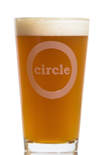
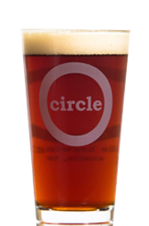
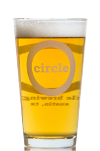
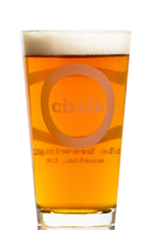

BLUR Texas Hefe
Blur is a unique blend of traditional Bavarian styling with a little Texan ingenuity. This Texas twist on the German wheat beer brings a hint of caramel to a crisp and refreshing style. The citrus aroma plays off the light and creamy body to create a beer that has no rival whether you enjoy it in the sun or in the shade.

ENVY Amber
Envy is the perfect balance between malt and hops. Not too dry nor too sweet, it is a full-bodied and complex beer without being overly heavy. The dried fruit notes derived from rich and earthy British malts and slightly higher fermentation temperatures conjure flavors reminiscent of an old-world ESB. Compare it to the last amber you had and you'll know why we call it ENVY.

ALIBI Blonde
A truly beautiful blonde. Born of a sensual blending of the German Mai Bock style and a laid-back and easy drinking American Blonde Ale. The complex and delicate melding of rich, flavorful Munich malt and the lightest flowering of hops make this already attractive brew a blonde you’ll always want to pick up and rarely be without.

Hop Overboard Pale Ale
Named after our three tanks that were tragically lost to the depths of the Pacific, Hop Overboard is a pale ale with West Coast beginnings. Overflowing with hop flavor and aroma, this pale lives up to its name and then some. Munich and caramel malt sweetness counterbalances the hop excess to a remarkable degree of harmony. Not overly bitter, this pale has everything you want ... just don't go too overboard.